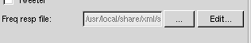
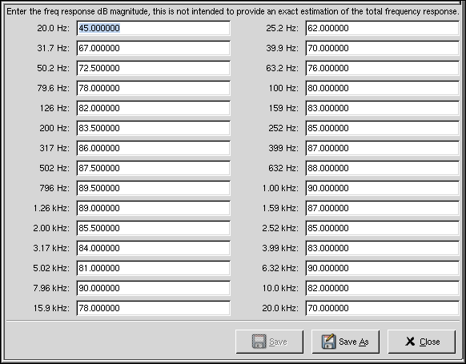

Preparations
The first thing you have to do, before you start designing a crossover, is to type in some more driver parameters. To calculate a good filter you need rdc (voice coil resistance), lvc (voice coil inductance), sensitivity, cone mass, effective radius, force factor, suspension resistance and suspension compleance. You should also add a frequency response graph by clicking on the Edit... button, as seen in figure 1.

Figure 1: click the edit button
Then the Frequency response editor seen in figure 2 will pop up on your screen.

Figure 2: the frequency response editor
In this editor you should type in the value (in dB) the graph on the datasheet has for every frequency. Then click on Save As and choose a filename. When you have done this for the all the drivers we will work with you should save the driver xml by clicking on Save on the driver toolbar. In figure 2 you can see the frequency response for the midrange driver Seas L14RCY/P. When you click on the Close-button the dialog will disappear and you will see a plot of the frequency response.
Type in all parameters from the datasheets and edit the frequnecy responses for all drivers. Then we can go on to the real filter design.
If you do not have the energy required to type in all values in the frequency response graph these drivers frequency response files is included in GSpeakers-0.9. So you actually can skip this section if you want.
Note:
The frequency response graph you will get in GSpeakers after editing the frequency response of a driver in the frequency reponse editor is only an estimation of the real frequnecy response. Depending on your filter construction this estimation will be pretty close or very far away from the real world.